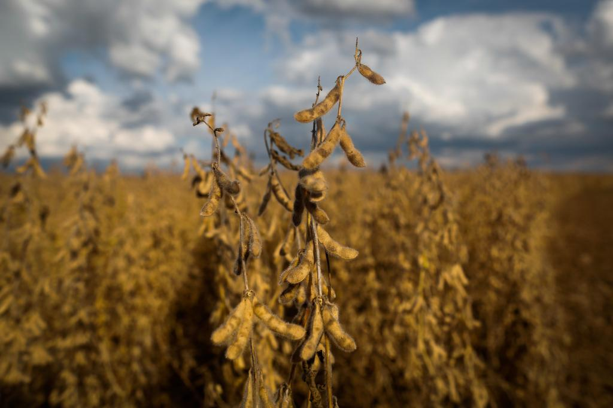
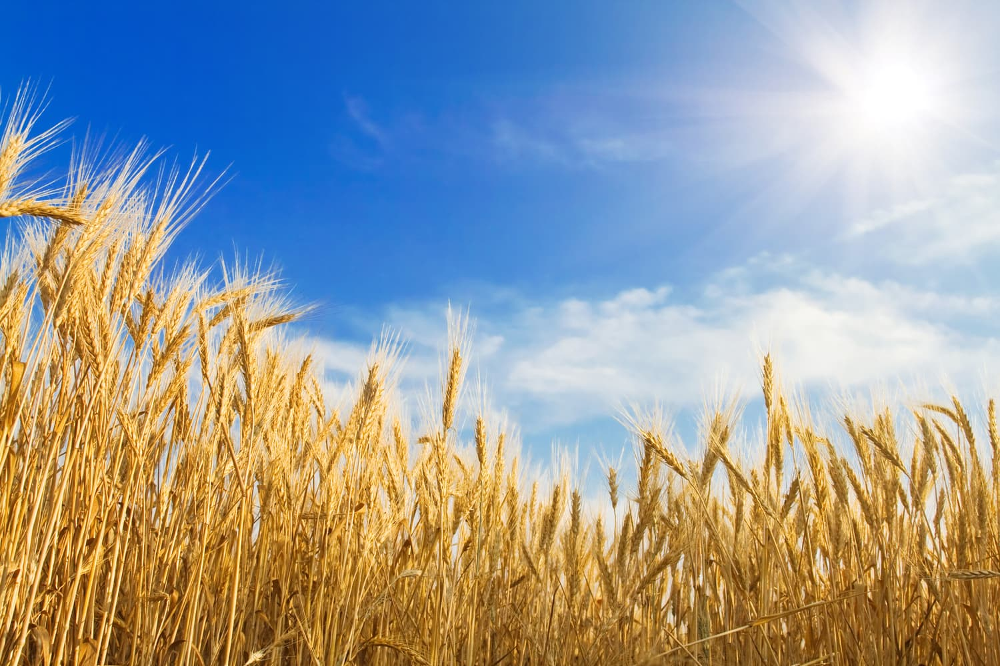

Soja

A soja é uma leguminosa muito importante para a alimentação e para a agricultura. É utilizada na produção de óleo, farelo, leite e outros alimentos. Também é uma importante fonte de proteínas e possui grande relevância na produção de ração animal e na economia agrícola.
Trigo

O trigo é um dos cereais mais cultivados no mundo. É utilizado principalmente na produção de farinha, pães, massas, bolos e biscoitos. Além de ser fonte de carboidratos, também fornece proteínas, fibras, vitaminas e minerais.
Contato
Preencha os campos abaixo para entrar em contato.